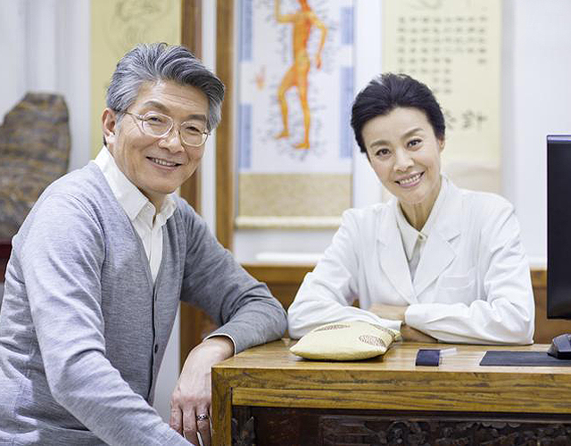

专家资源库 近日，国务院副总理刘延东在与国医大师座谈时再次明确提出"中医药是我国独特的卫生资源、潜力巨大的经济资源、具有原创优势的科技资源、优秀的文化资源、重要的生态资源"。本报今日起刊发系列文章，反映中医药行业内专家、学者、管理人士对刘延东副总理这一论述的热议和强烈反响。
投资融资 近日，国务院副总理刘延东在与国医大师座谈时再次明确提出"中医药是我国独特的卫生资源、潜力巨大的经济资源、具有原创优势的科技资源、优秀的文化资源、重要的生态资源"。本报今日起刊发系列文章，反映中医药行业内专家、学者、管理人士对刘延东副总理这一论述的热议和强烈反响。


成果转化 近日，国务院副总理刘延东在与国医大师座谈时再次明确提出"中医药是我国独特的卫生资源、潜力巨大的经济资源、具有原创优势的科技资源、优秀的文化资源、重要的生态资源"。本报今日起刊发系列文章，反映中医药行业内专家、学者、管理人士对刘延东副总理这一论述的热议和强烈反响。
技术资源库 近日，国务院副总理刘延东在与国医大师座谈时再次明确提出"中医药是我国独特的卫生资源、潜力巨大的经济资源、具有原创优势的科技资源、优秀的文化资源、重要的生态资源"。本报今日起刊发系列文章，反映中医药行业内专家、学者、管理人士对刘延东副总理这一论述的热议和强烈反响。
人才服务 近日，国务院副总理刘延东在与国医大师座谈时再次明确提出"中医药是我国独特的卫生资源、潜力巨大的经济资源、具有原创优势的科技资源、优秀的文化资源、重要的生态资源"。本报今日起刊发系列文章，反映中医药行业内专家、学者、管理人士对刘延东副总理这一论述的热议和强烈反响。
信息咨询 近日，国务院副总理刘延东在与国医大师座谈时再次明确提出"中医药是我国独特的卫生资源、潜力巨大的经济资源、具有原创优势的科技资源、优秀的文化资源、重要的生态资源"。本报今日起刊发系列文章，反映中医药行业内专家、学者、管理人士对刘延东副总理这一论述的热议和强烈反响。

 微信公众号
微信公众号